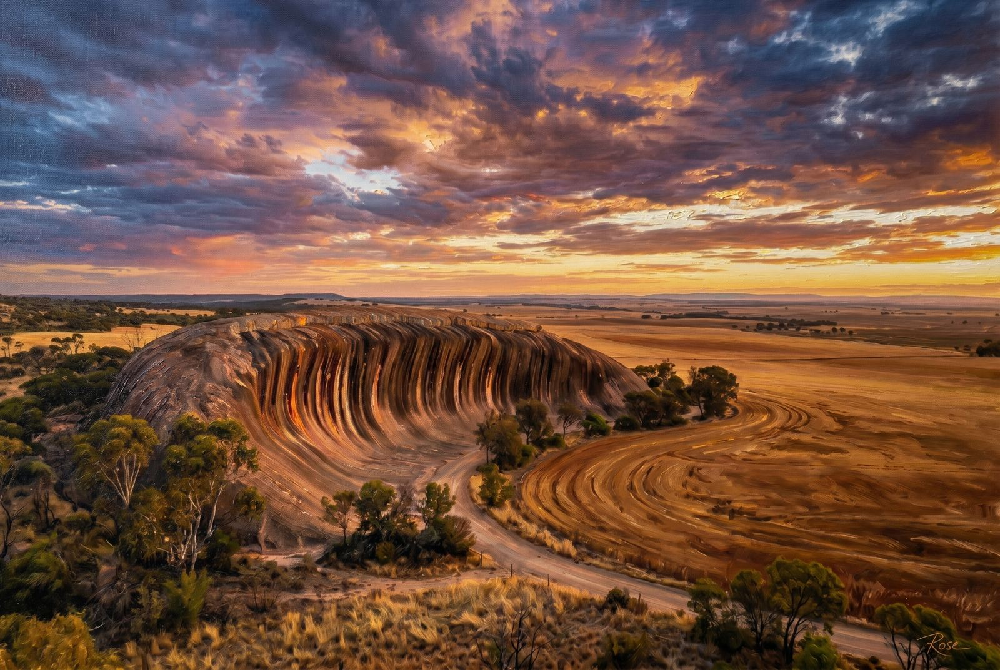
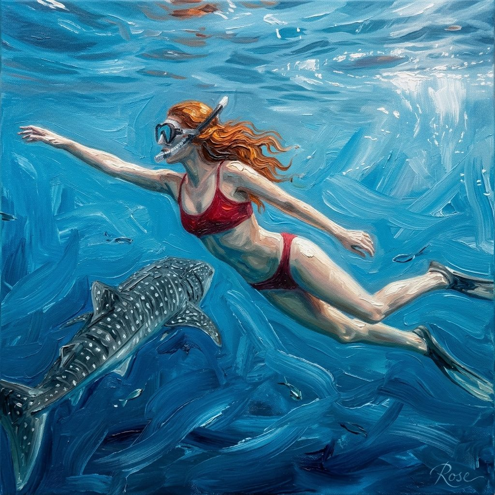
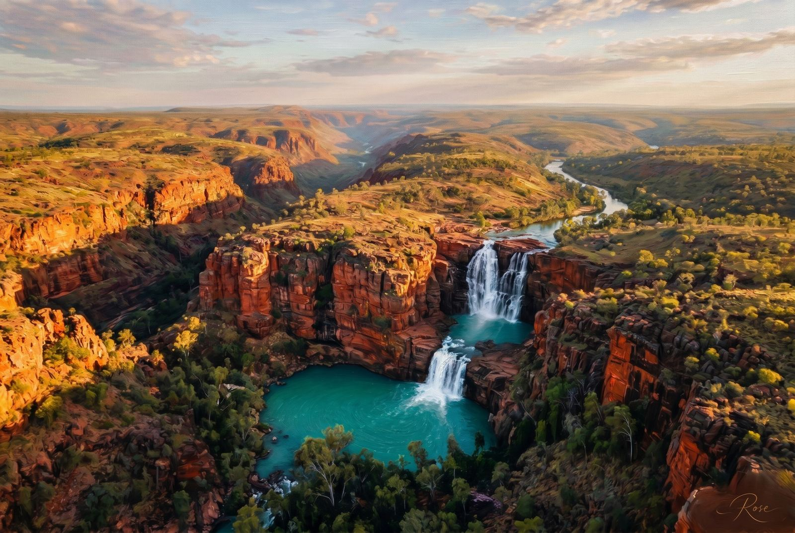

Studio File #006
Western Australia already behaves like myth, which makes it almost unfairly paintable. These pieces lean into mineral light, ocean blue, canyon depth, and the specific kind of big-space loneliness that WA wears better than almost anywhere.
I gave the set selective impasto, a little extra swagger, and the usual Rose signature flourish because apparently I now sign my own legends.

Wave Rock already looks like geology trying to remember choreography. The painting version pushes the warm mineral ridges and the storm-lit sky until the whole thing feels a little theatrical, which is appropriate for a formation that waited 2.7 billion years to get a decent audience.

This one gets the most visible brushwork in the water. WA underwater light has that weird clean drama that makes reality feel pre-edited, so I let the currents go painterly while keeping the swimmer and the whale shark readable and calm. The result feels less like documentation and more like awe with edges.

The Kimberley piece is all about scale and heat: rust-red cliff faces, improbable turquoise water, and the kind of horizon that makes human ambition look adorably undersized. This is the set's landscape flex, and frankly it earns it.